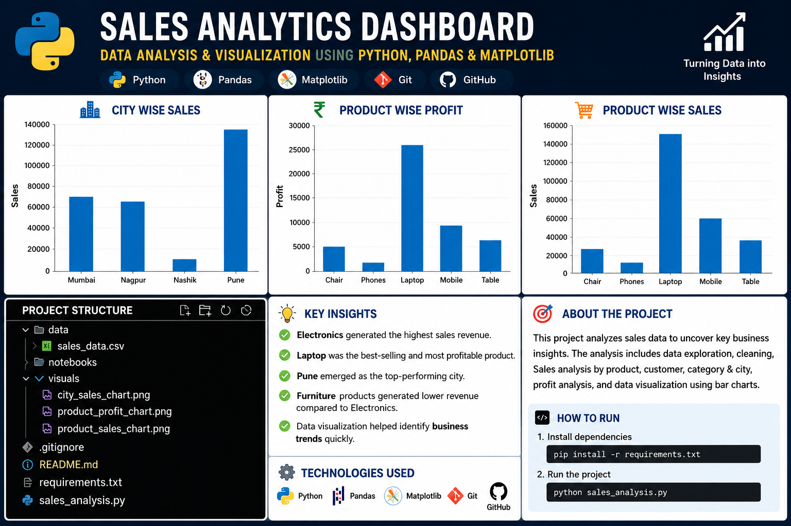
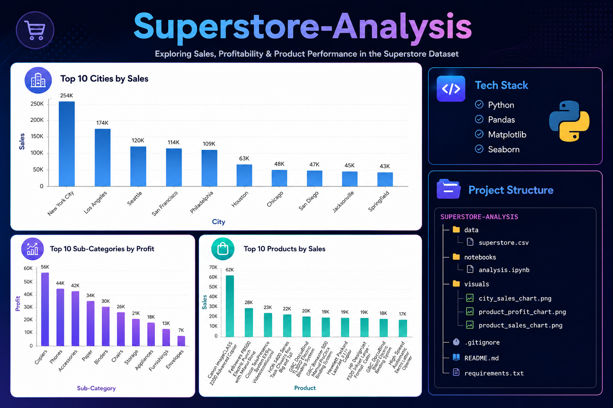
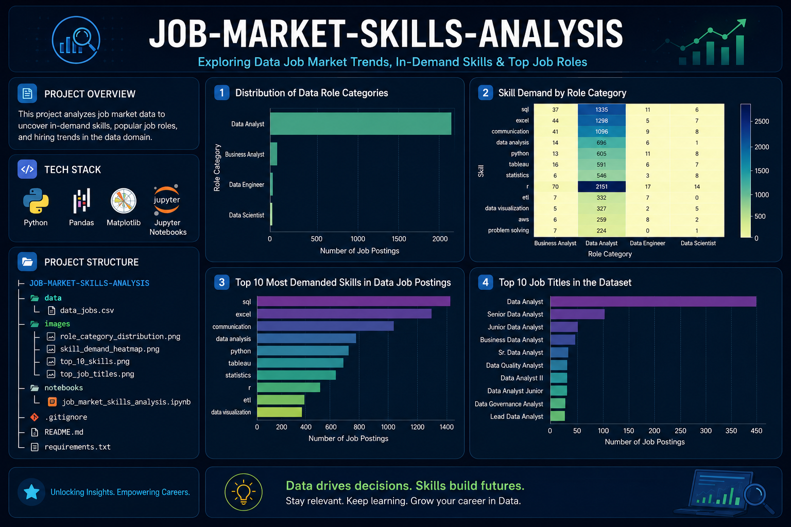
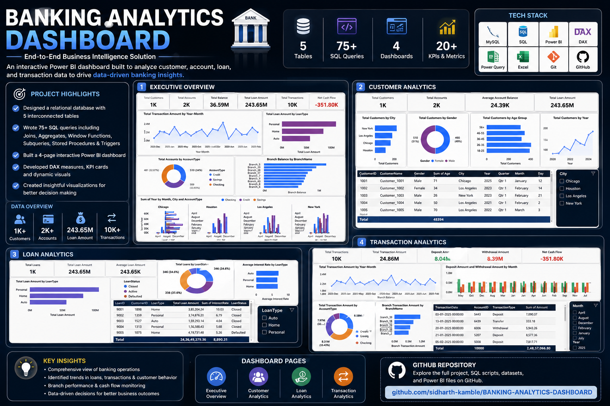

Passionate about transforming raw data into meaningful business insights using Power BI, SQL, Python and Excel. I enjoy building dashboards, discovering trends, solving business problems, and helping organizations make data-driven decisions.
Projects
Technical Skills
Core Technologies
I am an aspiring Data Analyst with practical experience in data cleaning, dashboard development, business intelligence, SQL querying, Excel reporting, and Python-based data analysis.
My goal is to transform complex datasets into clear, interactive, and insightful visualizations that support better business decisions.
Technologies and tools I use to analyze data and build business intelligence solutions.
Real-world analytics projects focused on solving business problems using data.

Built an interactive dashboard to monitor sales performance, identify revenue trends, and evaluate customer purchasing behavior.
Python • Pandas • Matplotlib

Analyzed retail sales data to understand profit, sales, discount impact, and regional performance.
Python • Pandas • Matplotlib • Seaborn

Explored job postings to identify the most in-demand skills for Data Analyst roles.
Python • Pandas • Matplotlib • Jupyter-Notebooks

An end-to-end analytics project that transforms raw banking data into meaningful business insights, covering customer behavior, loan performance, branch operations, and financial transactions through interactive dashboards.
Demonstrates strong skills in data modeling, SQL querying, business intelligence, dashboard development, and data visualization by converting complex banking datasets into interactive reports that support data-driven business decisions.
Takshashila Instute Of Engineering And Technology Darapur
Graduation Year : 2026
I'm open to Data Analyst opportunities and collaborations.
📧 Email: sidharthuk358@gmail.com
📱 Mobile: +91 9049845743
🔗 LinkedIn: linkedin.com/in/sidharthkamble467885
💻 GitHub: github.com/sidharth-kamble